Snowflake offers a rich set of functionalities for Time Series Analytics making it a performant and cost effective platform for bringing in your time series workloads. This quickstart lab covers a real world scenario of ingesting, analyzing and visualizing IOT time series data.
What You'll Learn
Upon completing this quickstart lab, you will have learned how to perform time series analytics in Snowflake, and will have gained practical experience in several areas:
- Setup a streaming ingestion client to to stream time series data into Snowflake using Snowpipe Streaming
- Model and transform the streaming time series data using Dynamic Tables
- Analyzing the data using native time series functions
- Building your own time series functions using Snowpark UDFs when necessary
- Deploying a Streamlit application for visualizing and analyzing time series data
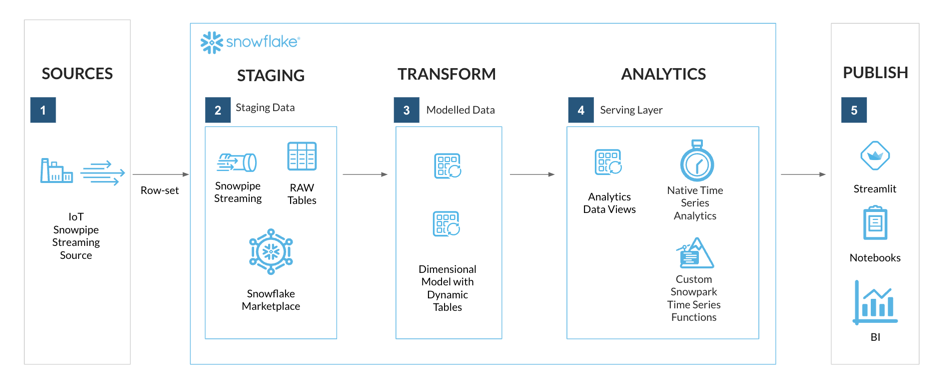
What You'll Build
By the end of this lab you will have an end-to-end streaming Time Series Analysis solution, with a front-end application deployed using Streamlit in Snowflake.

What You'll Need
- A supported Snowflake Browser
- Sign-up for a Snowflake Trial OR have access to an existing Snowflake account with the ACCOUNTADMIN role. Select the Enterprise edition, AWS as a cloud provider.
- Access to a personal GitHub account to fork the quickstart repo and create GitHub Codespaces. Codespaces offer a hosted development environment. GitHub offers free Codespace hours each month when using a 2 or 4 node environment, which should be enough to work through this lab.
Step 1 - Fork the Lab GitHub Repository
The first step is to create a fork of the Lab GitHub repository.
- In a web browser log into your Github account.
- Open Getting Started with Time Series Analytics for IoT in Snowflake associated GitHub Repository.
- This repository contains all the code you need to successfully complete this quickstart guide.
- Click on the "Fork" button near the top right.

- Click "Create Fork".

Step 2 - Deploy a GitHub Codespace for the Lab
Now create the GitHub Codespace.
- Click on the green
<> Codebutton from the GitHub repository homepage. - In the Code popup, click on the
Codespacestab. - Click
Create codespace on main.


INFO: Github Codespace Deployment Summary
Once complete you should see a hosted web-based version of VS Code Integrated Development Environment (IDE) in your browser with your forked repository.

The Github Codespace deployment will contain all the resources needed to complete the lab.
Step 3 - Verify Your Anaconda Environment is Activated
During the Codespace setup the postCreateCommand script created an Anaconda virtual environment named hol-timeseries. This virtual environment contains the packages needed to connect and interact with Snowflake using the Snowflake CLI.
To activate the virtual environment:
- Remove any existing open Terminal by clicking the
Kill Terminalbutton

- Open
Menu > Terminal > New Terminal- a new terminal window will now open

- Enter command
conda activate hol-timeseries


The terminal prompt should now show a prefix (hol-timeseries) to confirm the hol-timeseries virtual environment is activated.
Step 4 - Update Snowflake Connection Account Identifiers in Lab Files
- Login to your Snowflake account using a browser
- From the menu expand
Projects > Worksheets

- At the top right of the Worksheets screen, select
+ > SQL Worksheet. This will open a new worksheet in Snowsight.

- In the new worksheet, execute the following command that uses SYSTEM$ALLOWLIST to find your ACCOUNT_IDENTIFIER:
SELECT REPLACE(AL.VALUE:host::VARCHAR, '.snowflakecomputing.com', '') AS ACCOUNT_IDENTIFIER
FROM TABLE(FLATTEN(input => PARSE_JSON(SYSTEM$ALLOWLIST()))) AS AL
WHERE AL.VALUE:type::VARCHAR = 'SNOWFLAKE_DEPLOYMENT_REGIONLESS';
- In the results returned, below the command, select the row returned, and Copy the ACCOUNT_IDENTIFIER.

- Back in VS Code, navigate to the following files and in the files replace <ACCOUNT_IDENTIFIER> with your Snowflake account identifier value:
.snowflake/config.toml- account variable for both connections

iotstream/snowflake.properties- account variable
- host variable

- Save file changes by pressing
Command/CtrlandS
Step 5 - Configure Snowflake VS Code Extension Connection
- Open the Snowflake VS Code Extension

- For Account Identifier/URL, enter your <ACCOUNT_IDENTIFIER>, without the
.snowflakecomputing.com - Click Continue
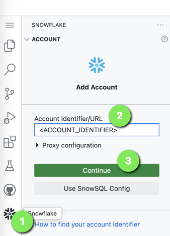
- For Auth Method select
Username/password - For Username enter the ACCOUNTADMIN user (defined when setting up the Snowflake account)
- For Password enter the ACCOUNTADMIN password
- Click
Sign in


Step 6 - Expand Snowflake Worksheets Folder
Worksheets have been provided for the next sections, these can be accessed by going to VS Code Explorer and expanding the worksheets folder.

Step 7 - Retrieve the Snowflake Public Key
As part of the GitHub Codespace setup, an OpenSSL Private Key-pair will be generated in the VS Code keys directory.
Copy the PUBLIC KEY value from the keys/rsa_key.pub file. This will be needed in the setup worksheet.


Step 8 - Update Snowflake "Setup" Worksheet with Lab Provisioned PUBLIC KEY
- Open worksheet:
worksheets/hol_timeseries_1_setup.sql - Find and replace the <RSA_PUBLIC_KEY> with the PUBLIC KEY copied from the
keys/rsa_key.pubfile.

NOTE: The pasted PUBLIC KEY can show on multiple lines and will work.
Create the Foundational Snowflake Objects for this Lab
This includes:
- Role: ROLE_HOL_TIMESERIES - role used for working throughout the lab
- User: USER_HOL_TIMESERIES - the user to connect to Snowflake
- Warehouses:
- HOL_TRANSFORM_WH - warehouse used for transforming ingested data
- HOL_ANALYTICS_WH - warehouse used for analytics
- Database: HOL_TIMESERIES - main database to store all lab objects
- Schemas:
- STAGING - RAW data source landing schema
- TRANSFORM - transformed and modeled data schema
- ANALYTICS - serving and analytics functions schema
- Grants: Access control grants for role ROLE_HOL_TIMESERIES
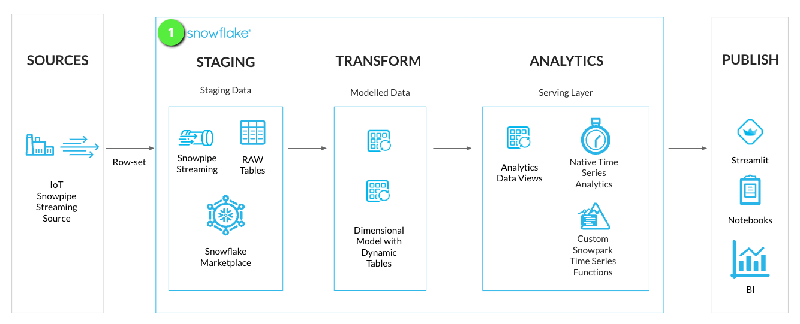
Step 1 - Run Snowflake Setup Worksheet
In the GitHub Codespace VS Code open worksheet: worksheets/hol_timeseries_1_setup.sql
Run the Worksheet to get Snowflake Resources Created
As the worksheet has been set up during the "Lab Setup" section, click Execute All Statements.

/*##### SNOWFLAKE SETUP SCRIPT #####*/
-- Login and assume ACCOUNTADMIN role
USE ROLE ACCOUNTADMIN;
-- Create lab role
CREATE ROLE IF NOT EXISTS ROLE_HOL_TIMESERIES;
GRANT ROLE ROLE_HOL_TIMESERIES TO ROLE SYSADMIN;
-- Create lab user
CREATE OR REPLACE USER USER_HOL_TIMESERIES DEFAULT_ROLE = "ROLE_HOL_TIMESERIES"
COMMENT = "HOL Time Series user.";
GRANT ROLE ROLE_HOL_TIMESERIES TO USER USER_HOL_TIMESERIES;
/*###### EXTERNAL ACTIVITY #####
A public key is setup in Github Codespace VS Code environment: keys/rsa_key.pub
Retrieve the public key detail and replace <RSA_PUBLIC_KEY>
with the contents of the public key excluding
the -----BEGIN PUBLIC KEY----- and -----END PUBLIC KEY----- lines
##############################*/
-- Assign lab user public key
ALTER USER USER_HOL_TIMESERIES SET RSA_PUBLIC_KEY='<RSA_PUBLIC_KEY>';
-- Setup HOL infrastructure objects
-- Assume the SYSADMIN role
USE ROLE SYSADMIN;
-- Create a TRANSFORM WH - used for ingest and transform activity
CREATE WAREHOUSE IF NOT EXISTS HOL_TRANSFORM_WH WITH WAREHOUSE_SIZE = XSMALL
AUTO_SUSPEND = 60 AUTO_RESUME = TRUE INITIALLY_SUSPENDED = TRUE
COMMENT = 'Transform Warehouse' ENABLE_QUERY_ACCELERATION = TRUE;
-- Create an Analytics WH = used for analytics and reporting
CREATE WAREHOUSE IF NOT EXISTS HOL_ANALYTICS_WH WITH WAREHOUSE_SIZE = XSMALL
AUTO_SUSPEND = 60 AUTO_RESUME = TRUE INITIALLY_SUSPENDED = TRUE
COMMENT = 'Analytics Warehouse' ENABLE_QUERY_ACCELERATION = TRUE;
-- Create HOL Database
CREATE DATABASE IF NOT EXISTS HOL_TIMESERIES COMMENT = 'HOL Time Series database.';
-- HOL Schemas
-- Create STAGING schema - for RAW data
CREATE SCHEMA IF NOT EXISTS HOL_TIMESERIES.STAGING WITH MANAGED ACCESS
COMMENT = 'HOL Time Series STAGING schema.';
-- Create TRANSFORM schema - for modeled data
CREATE SCHEMA IF NOT EXISTS HOL_TIMESERIES.TRANSFORM WITH MANAGED ACCESS
COMMENT = 'HOL Time Series TRANSFORM schema.';
-- Create ANALYTICS schema - for serving analytics
CREATE SCHEMA IF NOT EXISTS HOL_TIMESERIES.ANALYTICS WITH MANAGED ACCESS
COMMENT = 'HOL Time Series ANALYTICS schema.';
-- Grant HOL role access to lab resources
-- Assign database grants to lab role
GRANT USAGE ON DATABASE HOL_TIMESERIES TO ROLE ROLE_HOL_TIMESERIES;
-- Assign Warehouse grants to lab role
GRANT ALL ON WAREHOUSE HOL_TRANSFORM_WH TO ROLE ROLE_HOL_TIMESERIES;
GRANT ALL ON WAREHOUSE HOL_ANALYTICS_WH TO ROLE ROLE_HOL_TIMESERIES;
-- Assign schema grants to lab role
GRANT ALL ON SCHEMA HOL_TIMESERIES.STAGING TO ROLE ROLE_HOL_TIMESERIES;
GRANT ALL ON SCHEMA HOL_TIMESERIES.TRANSFORM TO ROLE ROLE_HOL_TIMESERIES;
GRANT ALL ON SCHEMA HOL_TIMESERIES.ANALYTICS TO ROLE ROLE_HOL_TIMESERIES;
-- Cortex ML Functions
GRANT CREATE SNOWFLAKE.ML.ANOMALY_DETECTION ON SCHEMA HOL_TIMESERIES.ANALYTICS TO ROLE ROLE_HOL_TIMESERIES;
GRANT CREATE SNOWFLAKE.ML.FORECAST ON SCHEMA HOL_TIMESERIES.ANALYTICS TO ROLE ROLE_HOL_TIMESERIES;
-- Notebooks
GRANT CREATE NOTEBOOK ON SCHEMA HOL_TIMESERIES.ANALYTICS TO ROLE ROLE_HOL_TIMESERIES;
/*##### SNOWFLAKE SETUP SCRIPT #####*/
With the foundational objects setup, we can now deploy a staging table to stream time series data into Snowflake via a Snowpipe Streaming client.
For this lab a Java IOT Simulator Client application has been created to stream IoT sensor readings into Snowflake.

Step 1 - Create Streaming Staging Table
We'll create a stage loading table to stream RAW time series data into Snowflake. This will be located in the STAGING schema of the HOL_TIMESERIES database.

In the GitHub Codespace VS Code open worksheet: worksheets/hol_timeseries_2_ingest.sql
- Run the Staging Table script to create the IoT stream staging table.
/*##############################
-- Staging Table - START
##############################*/
-- Set role, context, and warehouse
USE ROLE ROLE_HOL_TIMESERIES;
USE SCHEMA HOL_TIMESERIES.STAGING;
USE WAREHOUSE HOL_TRANSFORM_WH;
-- Setup staging tables - RAW_TS_IOTSTREAM_DATA
CREATE OR REPLACE TABLE HOL_TIMESERIES.STAGING.RAW_TS_IOTSTREAM_DATA (
RECORD_METADATA VARIANT,
RECORD_CONTENT VARIANT
)
CHANGE_TRACKING = TRUE
COMMENT = 'IOTSTREAM staging table.'
;
/*##############################
-- Staging Table - END
##############################*/
The IoT data will be streamed into Snowflake in a similar schema format as Kafka which contains two columns:
- RECORD_CONTENT - This contains the Kafka message.
- RECORD_METADATA - This contains metadata about the message, for example, the topic from which the message was read.
INFO: Snowpipe Streaming Ingest Client SDK
Snowflake provides an Ingest Client SDK in Java that allows applications, such as Kafka Connectors, to stream rows of data into a Snowflake table at low latency.

The Ingest Client SDK is configured with a secure JDBC connection to Snowflake, and will establish a streaming Channel between the client and a Snowflake table.

Step 2 - Test Streaming Client
Now that a staging table is available to stream time series data. We can look at setting up a streaming connection channel with a Java Snowpipe Streaming client. The simulator Java application is available in the iotstream folder of the lab, and can be run via a terminal with a Java runtime.
In the GitHub Codespace VS Code:
- Open
Menu > Terminal > New Terminal- a new terminal window will now open
- Change directory into to the iotstream folder:
cd iotstream
cd iotstream
- Run the
Test.shscript to confirm a table channel stream can be established with Snowflake.
./Test.sh
- In VS Code open the worksheet
worksheets/hol_timeseries_2_ingest.sqland run theSHOW CHANNELScommand to confirm a channel is now open to Snowflake.
SHOW CHANNELS;
The query should return a single channel CHANNEL_1_TEST opened to the RAW_TS_IOTSTREAM_DATA table.

With a channel now opened to the table we are ready to stream data into the table.
Step 3 - Load a Simulated IoT Data Set
With the channel connection being successful, we can now load the IoT data set, as fast as the connection and machine will allow.

The simulated IoT dataset contains six sensor devices at various frequencies, with each device being assigned a unique Tag Names within a single namespace called "IOT".
Namespace | Tag Name | Frequency | Units | Data Type | Sensor Type |
IOT | TAG101 | 5 SEC | PSI | DOUBLE | Pressure Gauge |
IOT | TAG201 | 10 SEC | RPM | DOUBLE | Motor RPM |
IOT | TAG301 | 1 SEC | KPA | DOUBLE | Pressure Gauge |
IOT | TAG401 | 60 SEC | CM3S | DOUBLE | Flow Sensor |
IOT | TAG501 | 60 SEC | DEGF | DOUBLE | Temperature Gauge |
IOT | TAG601 | 10 SEC | KPA | DOUBLE | Pressure Gauge |
- In the VS Code
Terminalrun theRun_MAX.shscript to load the IoT data.
./Run_MAX.sh
- In VS Code open the worksheet
worksheets/hol_timeseries_2_ingest.sqland run theSHOW CHANNELScommand to confirm a new channel is now open to Snowflake.
SHOW CHANNELS;
The query should return a new channel CHANNEL_1_MAX opened to the RAW_TS_IOTSTREAM_DATA table, with an offset_token showing the number of rows loaded.

- In VS Code open the worksheet
worksheets/hol_timeseries_2_ingest.sqland view the streamed records, by running theCheck stream table datascript.
-- Check stream table data
SELECT * FROM HOL_TIMESERIES.STAGING.RAW_TS_IOTSTREAM_DATA LIMIT 10;
- RECORD_METADATA - This contains metadata about IOT Tag reading.

- RECORD_CONTENT - This contains the IOT Tag reading.
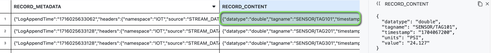
Each IoT device reading is a JSON payload, transmitted in the following Kafka like format:
{
"meta":
{
"LogAppendTime": "1714487166815",
"headers":
{
"namespace": "IOT",
"source": "STREAM_DATA.csv",
"speed": "MAX"
},
"offset": "116",
"partition": "1",
"topic": "time-series"
},
"content":
{
"datatype": "double",
"tagname": "SENSOR/TAG301",
"timestamp": "1704067279",
"units": "KPA",
"value": "118.152"
}
}
Now that data has been streamed into Snowflake, we are ready for some Data Engineering activities to get the data into a report ready state for analytics. We'll be transforming the data from the JSON VARIANT format into a tabular format. Using Snowflake Dynamic Tables, the data streamed into Snowflake will continuously update the analytics layers.
Along with setting up Dynamic Tables for continuous loading, we'll also deploy some analytics views for the consumer serving layer. This will allow for specific columns of data to be exposed to the end users and applications.

INFO: Dynamic Tables
Dynamic Tables are a declarative way of defining your data pipeline in Snowflake. It's a Snowflake table which is defined as a query to continuously and automatically materialize the result of that query as a table. Dynamic Tables can join and aggregate across multiple source objects and incrementally update results as sources change.
Dynamic Tables can also be chained together to create a DAG for more complex data pipelines.

Step 1 - Model Time Series Data with Dynamic Tables
For the IoT streaming data we'll setup two Dynamic Tables in a simple Dimension and Fact model:
- DT_TS_TAG_METADATA (Dimension): Containing Tag Metadata such as tag names, sourcing, and data types
- DT_TS_TAG_READINGS (Fact): Containing the readings from each IoT sensor in raw and numeric format

In VS Code open the worksheet worksheets/hol_timeseries_3_transform.sql and run the Dynamic Tables Setup scripts.
/*##############################
-- Dynamic Tables Setup - START
##############################*/
-- Set role, context, and warehouse
USE ROLE ROLE_HOL_TIMESERIES;
USE SCHEMA HOL_TIMESERIES.TRANSFORM;
USE WAREHOUSE HOL_TRANSFORM_WH;
/* Tag metadata (Dimension)
TAGNAME - uppercase concatenation of namespace and tag name
QUALIFY - deduplication filter to only include unique tag names
*/
CREATE OR REPLACE DYNAMIC TABLE HOL_TIMESERIES.TRANSFORM.DT_TS_TAG_METADATA
TARGET_LAG = '1 MINUTE'
WAREHOUSE = HOL_TRANSFORM_WH
REFRESH_MODE = 'INCREMENTAL'
AS
SELECT
SRC.RECORD_METADATA:headers:namespace::VARCHAR AS NAMESPACE,
SRC.RECORD_METADATA:headers:source::VARCHAR AS TAGSOURCE,
UPPER(CONCAT('/', SRC.RECORD_METADATA:headers:namespace::VARCHAR, '/', TRIM(SRC.RECORD_CONTENT:tagname::VARCHAR))) AS TAGNAME,
SRC.RECORD_CONTENT:units::VARCHAR AS TAGUNITS,
SRC.RECORD_CONTENT:datatype::VARCHAR AS TAGDATATYPE
FROM HOL_TIMESERIES.STAGING.RAW_TS_IOTSTREAM_DATA SRC
QUALIFY ROW_NUMBER() OVER (PARTITION BY UPPER(CONCAT('/', SRC.RECORD_METADATA:headers:namespace::VARCHAR, '/', TRIM(SRC.RECORD_CONTENT:tagname::VARCHAR))) ORDER BY SRC.RECORD_CONTENT:timestamp::NUMBER, SRC.RECORD_METADATA:offset::NUMBER) = 1;
/* Tag readings (Fact)
TAGNAME - uppercase concatenation of namespace and tag name
QUALIFY - deduplication filter to only include unique tag readings based on tagname and timestamp
*/
CREATE OR REPLACE DYNAMIC TABLE HOL_TIMESERIES.TRANSFORM.DT_TS_TAG_READINGS
TARGET_LAG = '1 MINUTE'
WAREHOUSE = HOL_TRANSFORM_WH
REFRESH_MODE = 'INCREMENTAL'
AS
SELECT
UPPER(CONCAT('/', SRC.RECORD_METADATA:headers:namespace::VARCHAR, '/', TRIM(SRC.RECORD_CONTENT:tagname::VARCHAR))) AS TAGNAME,
SRC.RECORD_CONTENT:timestamp::VARCHAR::TIMESTAMP_NTZ AS TIMESTAMP,
SRC.RECORD_CONTENT:value::VARCHAR AS VALUE,
TRY_CAST(SRC.RECORD_CONTENT:value::VARCHAR AS FLOAT) AS VALUE_NUMERIC,
SRC.RECORD_METADATA:partition::VARCHAR AS PARTITION,
SRC.RECORD_METADATA:offset::VARCHAR AS OFFSET
FROM HOL_TIMESERIES.STAGING.RAW_TS_IOTSTREAM_DATA SRC
QUALIFY ROW_NUMBER() OVER (PARTITION BY UPPER(CONCAT('/', SRC.RECORD_METADATA:headers:namespace::VARCHAR, '/', TRIM(SRC.RECORD_CONTENT:tagname::VARCHAR))), SRC.RECORD_CONTENT:timestamp::NUMBER ORDER BY SRC.RECORD_METADATA:offset::NUMBER) = 1;
/*##############################
-- Dynamic Tables Setup - END
##############################*/
Step 2 - Review Dynamic Table Details
- Login to Snowflake, and from the menu expand
Data > Databases > HOL_TIMESERIES > TRANSFORM > Dynamic Tables > DT_TS_TAG_METADATA > Refresh History
The DT_TS_TAG_METADATA table will show six rows loaded, representing the six tags of data streamed into Snowflake.

- Open the
Data Previewtab
You can now see the Tag Metadata in a columnar table format.
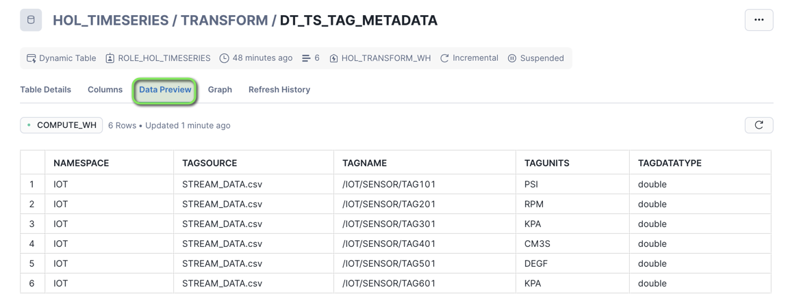
- Select
Dynamic Tables > DT_TS_TAG_READINGS > Refresh History
The DT_TS_TAG_READINGS table will show all the tag readings streamed into Snowflake.

- Open the
Data Previewtab
You can now see the Tag Readings in a columnar table format.

Step 3 - Create Analytics Views for Consumers
The Dynamic Tables are now set up to continuously transform streaming data. We can now look at setting up a Curated Analytics serving layer with some views for end users and applications to consume the streaming data.

We'll create a set of analytics views similar to the Dynamic Tables with a subset of columns in the ANALYTICS schema:
- TS_TAG_REFERENCE (Dimension): Containing Tag Metadata such as tag names, sourcing, and data types
- TS_TAG_READINGS (Fact): Containing the readings from each IoT sensor in raw and numeric format
In VS Code open the worksheet worksheets/hol_timeseries_3_transform.sql and run the Analytics Views Setup scripts.
/*##############################
-- Analytics Views Setup - START
##############################*/
-- Set role, context, and warehouse
USE ROLE ROLE_HOL_TIMESERIES;
USE SCHEMA HOL_TIMESERIES.ANALYTICS;
USE WAREHOUSE HOL_ANALYTICS_WH;
-- Tag Reference View
CREATE OR REPLACE VIEW HOL_TIMESERIES.ANALYTICS.TS_TAG_REFERENCE AS
SELECT
META.NAMESPACE,
META.TAGSOURCE,
META.TAGNAME,
META.TAGUNITS,
META.TAGDATATYPE
FROM HOL_TIMESERIES.TRANSFORM.DT_TS_TAG_METADATA META;
-- Tag Readings View
CREATE OR REPLACE VIEW HOL_TIMESERIES.ANALYTICS.TS_TAG_READINGS AS
SELECT
READ.TAGNAME,
READ.TIMESTAMP,
READ.VALUE,
READ.VALUE_NUMERIC
FROM HOL_TIMESERIES.TRANSFORM.DT_TS_TAG_READINGS READ;
/*##############################
-- Analytics Views Setup - END
##############################*/
Now that we have created the analytics views, we can start to query the data using Snowflake native time series functions.

INFO: Time Series Query Profiles
The following query profiles will be covered in this section.
Query Type | Functions | Description |
Raw | Time Boundary: Left, Right, and Both | Raw data within a time range. |
Mathematical calculations over values within a time range. | ||
Distribution Statistical Aggregates | Statistics on distributions of data. | |
LAG, LEAD, FIRST_VALUE, LAST_VALUE, ROWS BETWEEN, RANGE BETWEEN | Functions over a group of related rows. | |
Watermarks | Find latest or earliest values ordered by timestamps. | |
Downsampling / Time Binning | Time binning aggregations over time intervals. | |
Aligning time series datasets | Joining time series datasets when the timestamps don't match exactly, and interpolating values. | |
Gap Filling | Generating timestamps to fill time gaps. | |
Forecasting | Time-Series Forecasting (Snowflake Cortex ML Functions), FORECAST | Generating Time Series Forecasts using Snowflake Cortex ML. |
Date & Time Functions | This family of functions can be used to construct, convert, extract, or modify DATE/TIME/TIMESTAMP data. |
Step 1 - Copy Worksheet Content To Snowsight Worksheet
This section will be executed within a Snowflake Snowsight Worksheet
- Login to Snowflake, and from the menu expand
Projects > Worksheets
- At the top right of the Worksheets screen, select
+ > SQL Worksheet. This will open a new worksheet in Snowsight.
- In VS Code open the worksheet
worksheets/hol_timeseries_4_anaysis.sql - Copy the contents of the worksheet to clipboard, and paste it into the newly created Worksheet in Snowsight
Step 2 - Run Through the Snowsight Worksheet Time Series Analysis Queries
Set Session Context
Run the following three statements to ensure the worksheet session is in the right context.
-- Set role, context, and warehouse
USE ROLE ROLE_HOL_TIMESERIES;
USE SCHEMA HOL_TIMESERIES.ANALYTICS;
USE WAREHOUSE HOL_ANALYTICS_WH;
Exploring Raw Time Series Data
We'll start with a simple Raw query that returns time series data between an input start time and end time.
Raw: Retrieve time series data between an input start time and end time.
/* RAW
Retrieve time series data between an input start time and end time.
*/
SELECT TAGNAME, TIMESTAMP, VALUE
FROM HOL_TIMESERIES.ANALYTICS.TS_TAG_READINGS
WHERE TIMESTAMP >= '2024-01-01 00:00:00'
AND TIMESTAMP < '2024-01-01 00:00:10'
AND TAGNAME = '/IOT/SENSOR/TAG301'
ORDER BY TAGNAME, TIMESTAMP;

Time Series Statistical Aggregates
The following set of queries contains various Aggregate Functions covering counts, math operations, distributions, and watermarks.
Counts: Retrieve count and distinct counts within the time boundary.
/* COUNT AND COUNT DISTINCT
Retrieve count and distinct counts within the time boundary.
COUNT - Count of all values
COUNT DISTINCT - Count of unique values
Note: Counts can work with both varchar and numeric data types.
*/
SELECT TAGNAME, TO_TIMESTAMP_NTZ('2024-01-01 01:00:00') AS TIMESTAMP,
COUNT(VALUE) AS COUNT_VALUE,
COUNT(DISTINCT VALUE) AS COUNT_DISTINCT_VALUE
FROM HOL_TIMESERIES.ANALYTICS.TS_TAG_READINGS
WHERE TIMESTAMP > '2024-01-01 00:00:00'
AND TIMESTAMP <= '2024-01-01 01:00:00'
AND TAGNAME = '/IOT/SENSOR/TAG301'
GROUP BY TAGNAME
ORDER BY TAGNAME;

Math Operations: Retrieve statistical detail for the readings within the time boundary.
/* MIN/MAX/AVG/SUM
Retrieve statistical aggregates for the readings within the time boundary using math operations.
MIN - Minimum value
MAX - Maximum value
AVG - Average of values (mean)
SUM - Sum of values
Note: Aggregates can work with numerical data types.
*/
SELECT TAGNAME, TO_TIMESTAMP_NTZ('2024-01-01 01:00:00') AS TIMESTAMP,
MIN(VALUE_NUMERIC) AS MIN_VALUE,
MAX(VALUE_NUMERIC) AS MAX_VALUE,
SUM(VALUE_NUMERIC) AS SUM_VALUE,
AVG(VALUE_NUMERIC) AS AVG_VALUE
FROM HOL_TIMESERIES.ANALYTICS.TS_TAG_READINGS
WHERE TIMESTAMP > '2024-01-01 00:00:00'
AND TIMESTAMP <= '2024-01-01 01:00:00'
AND TAGNAME = '/IOT/SENSOR/TAG301'
GROUP BY TAGNAME
ORDER BY TAGNAME;

Relative Frequency: Consider the use case of calculating the frequency and relative frequency of each value within a specific time frame, to determine how often the value occurs.
Find the value that occurs most frequently within a time frame.
/* RELATIVE FREQUENCY
Consider the use case of calculating the frequency and relative frequency of each value
within a specific time frame, to determine how often the value occurs.
Find the value that occurs most frequently within a time frame.
*/
SELECT
TAGNAME,
VALUE,
COUNT(VALUE) AS FREQUENCY,
COUNT(VALUE) / SUM(COUNT(VALUE)) OVER(PARTITION BY TAGNAME) AS RELATIVE_FREQUENCY
FROM HOL_TIMESERIES.ANALYTICS.TS_TAG_READINGS
WHERE TAGNAME IN ('/IOT/SENSOR/TAG501')
AND TIMESTAMP > '2024-01-01 00:00:00'
AND TIMESTAMP <= '2024-01-01 01:00:00'
AND VALUE IS NOT NULL
GROUP BY TAGNAME, VALUE
ORDER BY TAGNAME, FREQUENCY DESC;
Relative Frequency: Value 424 occurs most, with a frequency of 13 and a relative frequency of 21.6%.
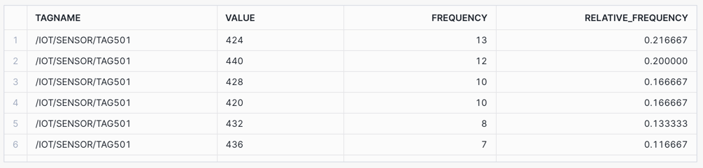
Distribution Statistics: Retrieve distribution sample statistics within the time boundary.
/* DISTRIBUTIONS - sample distributions statistics
Retrieve distribution sample statistics within the time boundary.
PERCENTILE_50 - 50% of values are less than this value.
PERCENTILE_95 - 95% of values are less than this value.
STDDEV - Closeness to the mean/average of the distribution.
VARIANCE - Spread between numbers in the time boundary.
KURTOSIS - Measure of outliers occuring.
SKEW - Left (negative) and right (positive) distribution skew.
Note: Distributions can work with numerical data types.
*/
SELECT TAGNAME || '~PERCENTILE_50_1HOUR' AS TAGNAME, TO_TIMESTAMP_NTZ('2024-01-01 01:00:00') AS TIMESTAMP, APPROX_PERCENTILE(VALUE_NUMERIC, 0.5) AS VALUE
FROM HOL_TIMESERIES.ANALYTICS.TS_TAG_READINGS
WHERE TIMESTAMP > '2024-01-01 00:00:00'
AND TIMESTAMP <= '2024-01-01 01:00:00'
AND TAGNAME = '/IOT/SENSOR/TAG301'
GROUP BY TAGNAME
UNION ALL
SELECT TAGNAME || '~PERCENTILE_95_1HOUR' AS TAGNAME, TO_TIMESTAMP_NTZ('2024-01-01 01:00:00') AS TIMESTAMP, APPROX_PERCENTILE(VALUE_NUMERIC, 0.95) AS VALUE
FROM HOL_TIMESERIES.ANALYTICS.TS_TAG_READINGS
WHERE TIMESTAMP > '2024-01-01 00:00:00'
AND TIMESTAMP <= '2024-01-01 01:00:00'
AND TAGNAME = '/IOT/SENSOR/TAG301'
GROUP BY TAGNAME
UNION ALL
SELECT TAGNAME || '~STDDEV_1HOUR' AS TAGNAME, TO_TIMESTAMP_NTZ('2024-01-01 01:00:00') AS TIMESTAMP, STDDEV(VALUE_NUMERIC) AS VALUE
FROM HOL_TIMESERIES.ANALYTICS.TS_TAG_READINGS
WHERE TIMESTAMP > '2024-01-01 00:00:00'
AND TIMESTAMP <= '2024-01-01 01:00:00'
AND TAGNAME = '/IOT/SENSOR/TAG301'
GROUP BY TAGNAME
UNION ALL
SELECT TAGNAME || '~VARIANCE_1HOUR' AS TAGNAME, TO_TIMESTAMP_NTZ('2024-01-01 01:00:00') AS TIMESTAMP, VARIANCE(VALUE_NUMERIC) AS VALUE
FROM HOL_TIMESERIES.ANALYTICS.TS_TAG_READINGS
WHERE TIMESTAMP > '2024-01-01 00:00:00'
AND TIMESTAMP <= '2024-01-01 01:00:00'
AND TAGNAME = '/IOT/SENSOR/TAG301'
GROUP BY TAGNAME
UNION ALL
SELECT TAGNAME || '~KURTOSIS_1HOUR' AS TAGNAME, TO_TIMESTAMP_NTZ('2024-01-01 01:00:00') AS TIMESTAMP, KURTOSIS(VALUE_NUMERIC) AS VALUE
FROM HOL_TIMESERIES.ANALYTICS.TS_TAG_READINGS
WHERE TIMESTAMP > '2024-01-01 00:00:00'
AND TIMESTAMP <= '2024-01-01 01:00:00'
AND TAGNAME = '/IOT/SENSOR/TAG301'
GROUP BY TAGNAME
UNION ALL
SELECT TAGNAME || '~SKEW_1HOUR' AS TAGNAME, TO_TIMESTAMP_NTZ('2024-01-01 01:00:00') AS TIMESTAMP, SKEW(VALUE_NUMERIC) AS VALUE
FROM HOL_TIMESERIES.ANALYTICS.TS_TAG_READINGS
WHERE TIMESTAMP > '2024-01-01 00:00:00'
AND TIMESTAMP <= '2024-01-01 01:00:00'
AND TAGNAME = '/IOT/SENSOR/TAG301'
GROUP BY TAGNAME
ORDER BY TAGNAME;

Watermarks: Consider the use case of determining a sensor variance over time by calculating the latest (high watermark) and earliest (low watermark) readings within a time boundary.
Retrieve both the high watermark (latest time stamped value) and low watermark (earliest time stamped value) readings within the time boundary.
/* WATERMARKS
Retrieve both the high watermark (latest time stamped value) and low watermark (earliest time stamped value) readings within the time boundary.
MAX_BY - High Watermark - latest reading in the time boundary
MIN_BY - Low Watermark - earliest reading in the time boundary
*/
SELECT TAGNAME || '~MAX_BY_1HOUR' AS TAGNAME, MAX_BY(TIMESTAMP, TIMESTAMP) AS TIMESTAMP, MAX_BY(VALUE, TIMESTAMP) AS VALUE
FROM HOL_TIMESERIES.ANALYTICS.TS_TAG_READINGS
WHERE TIMESTAMP > '2024-01-01 00:00:00'
AND TIMESTAMP <= '2024-01-01 01:00:00'
AND TAGNAME = '/IOT/SENSOR/TAG301'
GROUP BY TAGNAME
UNION ALL
SELECT TAGNAME || '~MIN_BY_1HOUR' AS TAGNAME, MIN_BY(TIMESTAMP, TIMESTAMP) AS TIMESTAMP, MIN_BY(VALUE, TIMESTAMP) AS VALUE
FROM HOL_TIMESERIES.ANALYTICS.TS_TAG_READINGS
WHERE TIMESTAMP > '2024-01-01 00:00:00'
AND TIMESTAMP <= '2024-01-01 01:00:00'
AND TAGNAME = '/IOT/SENSOR/TAG301'
GROUP BY TAGNAME
ORDER BY TAGNAME;

Time Series Analytics using Window Functions
Window Functions enable aggregates to operate over groups of data, looking forward and backwards in the ordered data rows, and returning a single result for each group. More detail available in Using Window Functions.
- The OVER() clause defines the group of rows used in the calculation.
- The PARTITION BY sub-clause allows us to divide that window into sub-windows.
- The ORDER BY clause can be used with ASC (ascending) or DESC (descending), and allows ordering of the partition sub-window rows.
Lag and Lead: Consider the use case where you need to analyze the changes in the readings of a specific IoT sensor over a short period (say 10 seconds) by examining the current, previous, and next values of the readings.
Access data in previous (LAG) or subsequent (LEAD) rows without having to join the table to itself.
/* WINDOW FUNCTIONS - LAG AND LEAD
Consider the use case where you need to analyze the changes in the readings of a specific IoT sensor
over a short period (say 10 seconds) by examining the current, previous, and next values of the readings.
Access data in previous (LAG) or subsequent (LEAD) rows without having to join the table to itself.
LAG - Prior time period value
LEAD - Next time period value
*/
SELECT TAGNAME, TIMESTAMP, VALUE_NUMERIC AS VALUE,
LAG(VALUE_NUMERIC) OVER (
PARTITION BY TAGNAME ORDER BY TIMESTAMP) AS LAG_VALUE,
LEAD(VALUE_NUMERIC) OVER (
PARTITION BY TAGNAME ORDER BY TIMESTAMP) AS LEAD_VALUE
FROM HOL_TIMESERIES.ANALYTICS.TS_TAG_READINGS
WHERE TIMESTAMP >= '2024-01-01 00:00:00'
AND TIMESTAMP < '2024-01-01 00:00:10'
AND TAGNAME = '/IOT/SENSOR/TAG301'
ORDER BY TAGNAME, TIMESTAMP;

First and Last Value: Consider the use case of change detection where you want to detect any sudden pressure changes in comparison to initial and final values in a specific time frame.
For this you would use the FIRST_VALUE and LAST_VALUE window functions to retrieve the first and last values within the time boundary to perform such an analysis.
/* FIRST_VALUE AND LAST_VALUE
Consider the use case of change detection where you want to detect any sudden pressure changes in comparison to initial and final values in a specific time frame.
For this you would use the FIRST_VALUE and LAST_VALUE window functions to retrieve the first and last values within the time boundary to perform such an analysis.
FIRST_VALUE - First value in the time boundary
LAST_VALUE - Last value in the time boundary
*/
SELECT TAGNAME, TIMESTAMP, VALUE_NUMERIC AS VALUE,
FIRST_VALUE(VALUE_NUMERIC) OVER (
PARTITION BY TAGNAME ORDER BY TIMESTAMP) AS FIRST_VALUE,
LAST_VALUE(VALUE_NUMERIC) OVER (
PARTITION BY TAGNAME ORDER BY TIMESTAMP) AS LAST_VALUE
FROM HOL_TIMESERIES.ANALYTICS.TS_TAG_READINGS
WHERE TIMESTAMP >= '2024-01-01 00:00:00'
AND TIMESTAMP < '2024-01-01 00:00:10'
AND TAGNAME = '/IOT/SENSOR/TAG301'
ORDER BY TAGNAME, TIMESTAMP;

Rows Between - Preceding and Following: Consider the use case, where the data you have is second by second sensor readings, and you want to compute the rolling 6 second average of sensor readings over a specific time frame to detect trends and patterns in the data.
In cases where the data doesn't have any gaps, you can use ROWS BETWEEN window frames to perform these rolling calculations.
Create a rolling AVG for the five preceding and following rows, inclusive of the current row.
/* WINDOW FUNCTIONS - ROWS BETWEEN
Consider the use case, where the data you have second by second sensor reading and you want to compute the
rolling 6 second average of sensor readings over a specific time frame to detect trends and patterns in the data.
In cases where the data doesn't have any gaps like this one, you can use ROW BETWEEN
window frames to perform these rolling calculations.
Create a rolling AVG for the five preceding and following rows, inclusive of the current row.
ROW_AVG_PRECEDING - Rolling AVG from 5 preceding rows and current row
ROW_AVG_FOLLOWING - Rolling AVG from current row and 5 following rows
*/
SELECT TAGNAME, TIMESTAMP, VALUE_NUMERIC AS VALUE,
AVG(VALUE_NUMERIC) OVER (
PARTITION BY TAGNAME ORDER BY TIMESTAMP
ROWS BETWEEN 5 PRECEDING AND CURRENT ROW) AS ROW_AVG_PRECEDING,
AVG(VALUE_NUMERIC) OVER (
PARTITION BY TAGNAME ORDER BY TIMESTAMP
ROWS BETWEEN CURRENT ROW AND 5 FOLLOWING) AS ROW_AVG_FOLLOWING
FROM HOL_TIMESERIES.ANALYTICS.TS_TAG_READINGS
WHERE TIMESTAMP >= '2024-01-01 00:00:00'
AND TIMESTAMP < '2024-01-01 00:01:00'
AND TAGNAME = '/IOT/SENSOR/TAG301'
ORDER BY TAGNAME, TIMESTAMP;
Selecting the first six row cells will show the matching ROWS BETWEEN averages preceding and following.

NOTE: At the time of publishing this lab, in late May 2024, the RANGE BETWEEN function was in Private Preview. We have included it in the lab content for reference. If you receive errors when running the RANGE BETWEEN queries, it may NOT be released in your region just yet, it is targeted to be Public Preview soon. Please review the Snowflake Preview Features page for more information.
Range Between - 1 MIN Rolling Average and Sum showing gap differences: Create a rolling AVG and SUM for the time INTERVAL 1 minute preceding, inclusive of the current row. Assuming the preceding 12 rows would make up 1 minute of data.
SELECT TAGNAME, TIMESTAMP, VALUE_NUMERIC AS VALUE,
AVG(VALUE_NUMERIC) OVER (
PARTITION BY TAGNAME ORDER BY TIMESTAMP
RANGE BETWEEN INTERVAL '1 MIN' PRECEDING AND CURRENT ROW) AS RANGE_AVG_1MIN,
AVG(VALUE_NUMERIC) OVER (
PARTITION BY TAGNAME ORDER BY TIMESTAMP
ROWS BETWEEN 12 PRECEDING AND CURRENT ROW) AS ROW_AVG_1MIN,
SUM(VALUE_NUMERIC) OVER (
PARTITION BY TAGNAME ORDER BY TIMESTAMP
RANGE BETWEEN INTERVAL '1 MIN' PRECEDING AND CURRENT ROW) AS RANGE_SUM_1MIN,
SUM(VALUE_NUMERIC) OVER (
PARTITION BY TAGNAME ORDER BY TIMESTAMP
ROWS BETWEEN 12 PRECEDING AND CURRENT ROW) AS ROW_SUM_1MIN
FROM HOL_TIMESERIES.ANALYTICS.TS_TAG_READINGS
WHERE TIMESTAMP >= '2024-01-01 00:00:00'
AND TIMESTAMP <= '2024-01-01 01:00:00'
AND DATE_PART('SECOND', TIMESTAMP) NOT IN (20, 45, 55)
AND TAGNAME = '/IOT/SENSOR/TAG101'
ORDER BY TAGNAME, TIMESTAMP;
The first minute of data aligns for both RANGE BETWEEN and ROWS BETWEEN, however, after the first minute the rolling values will start to show variances due to the introduced time gaps.

CHART: Rolling 1 MIN Average and Sum - showing differences between RANGE BETWEEN and ROWS BETWEEN
- Select the
Chartsub tab below the worksheet. - Under Data select the
VALUEcolumn and set the Aggregation toMax. - Select
+ Add columnand selectRANGE_AVG_1MINand set Aggregation toMax. - Select
+ Add columnand selectROW_AVG_1MINand set Aggregation toMax.
The chart shows variances between the RANGE BETWEEN and ROWS BETWEEN occuring after the first minute.
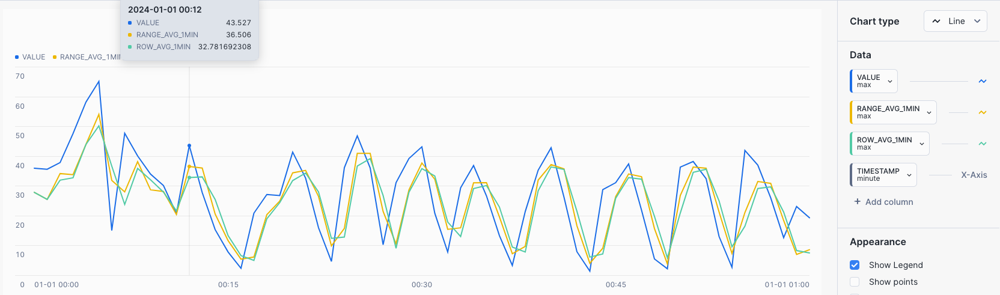
Range Between - 5 MIN Rolling Average and Sum: Let's expand on RANGE BETWEEN and create a rolling AVG and SUM for the time INTERVAL five minutes preceding, inclusive of the current row.
/* WINDOW FUNCTIONS - RANGE BETWEEN
Let's expand on RANGE BETWEEN and create a rolling AVG and SUM for the time **INTERVAL** five minutes preceding, inclusive of the current row.
INTERVAL - 5 MIN AVG and SUM preceding the current row
*/
SELECT TAGNAME, TIMESTAMP, VALUE_NUMERIC AS VALUE,
AVG(VALUE_NUMERIC) OVER (
PARTITION BY TAGNAME ORDER BY TIMESTAMP
RANGE BETWEEN INTERVAL '5 MIN' PRECEDING AND CURRENT ROW) AS RANGE_AVG_5MIN,
SUM(VALUE_NUMERIC) OVER (
PARTITION BY TAGNAME ORDER BY TIMESTAMP
RANGE BETWEEN INTERVAL '5 MIN' PRECEDING AND CURRENT ROW) AS RANGE_SUM_5MIN
FROM HOL_TIMESERIES.ANALYTICS.TS_TAG_READINGS
WHERE TIMESTAMP >= '2024-01-01 00:00:00'
AND TIMESTAMP <= '2024-01-01 01:00:00'
AND TAGNAME = '/IOT/SENSOR/TAG401'
ORDER BY TAGNAME, TIMESTAMP;

CHART: Rolling 5 MIN Average
- Select the
Chartsub tab below the worksheet. - Under Data select the
VALUEand set the Aggregation toMax. - Select
+ Add columnand selectRANGE_AVG_5MINand set Aggregation toMax.
A rolling average could be useful in scenarios where you are trying to detect EXCEEDANCES in equipment operating limits over periods of time, such as a maximum pressure limit.

Downsampling Time Series Data
Downsampling is used to decrease the frequency of time samples, such as from seconds to minutes, by placing time series data into fixed time intervals using aggregate operations on the existing values within each time interval.
Time Binning - 5 min Aggregate: Consider a use case where you want to obtain a broader view of a high frequency pressure gauge, by aggregating data into evenly spaced intervals to find trends over time.
Create a downsampled time series data set with 5 minute aggregates, showing the START and END timestamp label of each interval.
/* TIME BINNING - 5 min AGGREGATE with START and END label
Create a downsampled time series data set with 5 minute aggregates, showing the START and END timestamp label of each interval.
COUNT - Count of values within the time bin
SUM - Sum of values within the time bin
AVG - Average of values (mean) within the time bin
PERCENTILE_95 - 95% of values are less than this within the time bin
*/
SELECT TAGNAME,
TIME_SLICE(TIMESTAMP, 5, 'MINUTE', 'START') AS START_TIMESTAMP,
TIME_SLICE(TIMESTAMP, 5, 'MINUTE', 'END') AS END_TIMESTAMP,
COUNT(*) AS COUNT_VALUE,
SUM(VALUE_NUMERIC) AS SUM_VALUE,
AVG(VALUE_NUMERIC) AS AVG_VALUE,
APPROX_PERCENTILE(VALUE_NUMERIC, 0.95) AS PERCENTILE_95_VALUE
FROM HOL_TIMESERIES.ANALYTICS.TS_TAG_READINGS
WHERE TIMESTAMP >= '2024-01-01 00:00:00'
AND TIMESTAMP < '2024-01-01 01:00:00'
AND TAGNAME = '/IOT/SENSOR/TAG301'
GROUP BY TIME_SLICE(TIMESTAMP, 5, 'MINUTE', 'START'), TIME_SLICE(TIMESTAMP, 5, 'MINUTE', 'END'), TAGNAME
ORDER BY TAGNAME, START_TIMESTAMP;
For a one second tag (3600 data points over an hour), the results will show in five minute intervals containing 300 data points each, along with aggregates for counts, sum, average, and 95th percentile values.

Aligning Time Series Data
Often you will need to align two data sets that may have differing time frequencies. To do this you can utilize the Time Series ASOF JOIN to pair closely matching records based on timestamps.
Joining Time Series Data with ASOF JOIN: Consider the use case where you want to align a one second and five second pressure gauge to determine if there is a correlation.
Using the ASOF JOIN, join two data sets by applying a MATCH_CONDITION to pair closely aligned timestamps and values.
/* ASOF JOIN - Align a 1 second tag with a 5 second tag
Consider the use case where you want to align a one second and five second pressure gauge to determine if there is a correlation.
Using the `ASOF JOIN`, join two data sets by applying a `MATCH_CONDITION` to pair closely aligned timestamps and values.
*/
SELECT ONE_SEC.TAGNAME AS ONE_SEC_TAGNAME, ONE_SEC.TIMESTAMP AS ONE_SEC_TIMESTAMP, ONE_SEC.VALUE_NUMERIC AS ONE_SEC_VALUE, FIVE_SEC.VALUE_NUMERIC AS FIVE_SEC_VALUE, FIVE_SEC.TAGNAME AS FIVE_SEC_TAGNAME, FIVE_SEC.TIMESTAMP AS FIVE_SEC_TIMESTAMP
FROM HOL_TIMESERIES.ANALYTICS.TS_TAG_READINGS ONE_SEC
ASOF JOIN (
-- 5 sec tag data
SELECT TAGNAME, TIMESTAMP, VALUE_NUMERIC
FROM HOL_TIMESERIES.ANALYTICS.TS_TAG_READINGS
WHERE TAGNAME = '/IOT/SENSOR/TAG101'
) FIVE_SEC
MATCH_CONDITION(ONE_SEC.TIMESTAMP >= FIVE_SEC.TIMESTAMP)
WHERE ONE_SEC.TAGNAME = '/IOT/SENSOR/TAG301'
AND ONE_SEC.TIMESTAMP >= '2024-01-03 09:15:00'
AND ONE_SEC.TIMESTAMP <= '2024-01-03 09:45:00'
ORDER BY ONE_SEC.TIMESTAMP;

CHART: Aligned Time Series Data
- Select the
Chartsub tab below the worksheet. - Under Data set the first Data column to
ONE_SEC_VALUEwith an Aggregation ofMax. - Set the X-Axis to
ONE_SEC_TIMESTAMPand a Bucketing ofSecond - Select
+ Add columnand selectFIVE_SEC_VALUEand set Aggregation toMax.
One sensor is showing a significant drop whilst the other is showing an increase to a peak at similar times, which could potentially be an anomaly.

Gap Filling
Time gap filling is the process of generating timestamps for a given start and end time boundary, and joining to a tag with less frequent timestamp values, and filling missing / gap timestamps with a prior value. This can also be referred to as Upsampling or Forward Filling.
Gap Filling: Generate timestamps given a start and end time boundary, and use ASOF JOIN to a tag dataset with less frequent values, to forward fill using last observed value carried forward (LOCF).
/* GAP FILLING - 1 SEC TIMESTAMPS WITH 5 SEC TAG
Generate timestamps given a start and end time boundary, and use ASOF JOIN
to a tag dataset with less frequent values, to forward fill using last observed value carried forward (LOCF).
1 - SET TIME_PERIODS - A variable passed into the query to determine the number of time stamps generated for gap filling.
2 - Run the LOCF query passing in the TIME_PERIODS to the generated calendar
*/
-- SET TIME_PERIODS IN SECONDS
SET TIME_PERIODS = (SELECT TIMESTAMPDIFF('SECOND', '2024-01-01 00:00:00'::TIMESTAMP_NTZ, '2024-01-01 00:00:00'::TIMESTAMP_NTZ + INTERVAL '1 MINUTE'));
-- LAST OBSERVED VALUE CARRIED FORWARD (LOCF) - IGNORE NULLS
WITH TIMES AS (
-- 1 SECOND TIMESTAMPS USING TIME PERIODS
SELECT
DATEADD('SECOND', ROW_NUMBER() OVER (ORDER BY SEQ8()) - 1, '2024-01-01')::TIMESTAMP_NTZ AS TIMESTAMP,
'/IOT/SENSOR/TAG101' AS TAGNAME
FROM TABLE(GENERATOR(ROWCOUNT => $TIME_PERIODS))
),
DATA AS (
-- 5 SECOND TAG
SELECT TAGNAME, TIMESTAMP, VALUE_NUMERIC AS VALUE,
FROM HOL_TIMESERIES.ANALYTICS.TS_TAG_READINGS
WHERE TIMESTAMP >= '2024-01-01 00:00:00'
AND TIMESTAMP < '2024-01-01 00:01:00'
AND TAGNAME = '/IOT/SENSOR/TAG101'
)
SELECT TIMES.TIMESTAMP,
A.TAGNAME AS TAGNAME,
L.VALUE,
A.VALUE AS LOCF_VALUE
FROM TIMES
LEFT JOIN DATA L ON TIMES.TIMESTAMP = L.TIMESTAMP AND TIMES.TAGNAME = L.TAGNAME
ASOF JOIN DATA A MATCH_CONDITION(TIMES.TIMESTAMP >= A.TIMESTAMP) ON TIMES.TAGNAME = A.TAGNAME
ORDER BY TAGNAME, TIMESTAMP;

Time Series Forecasting
Time-Series Forecasting employs a machine learning (ML) algorithm to predict future data by using historical time series data.
Forecasting is part of ML Functions in Snowflake Cortex, Snowflake's intelligent, fully-managed AI and ML service.
Forecasting: Consider a use case where you want to predict expected production output based on a flow sensor. In this case, you could generate a time series forecast for a single tag looking forward one day for a flow sensor.
- Create a forecast training data set from historical data.
/* FORECAST DATA - Training Data Set - /IOT/SENSOR/TAG401
A single tag of data for two weeks.
1 - Create a forecast training data set from historical data. This will use a temporary table.
*/
CREATE OR REPLACE TEMPORARY TABLE HOL_TIMESERIES.ANALYTICS.TEMP_TS_TAG_TRAIN AS
SELECT TAGNAME, TIMESTAMP, VALUE_NUMERIC AS VALUE
FROM HOL_TIMESERIES.ANALYTICS.TS_TAG_READINGS
WHERE TAGNAME = '/IOT/SENSOR/TAG401'
ORDER BY TAGNAME, TIMESTAMP;
- Create a Time-Series SNOWFLAKE.ML.FORECAST model using the training data set.
/* FORECAST MODEL - Training Data Set - /IOT/SENSOR/TAG401
2 - Create a Time-Series SNOWFLAKE.ML.FORECAST model using the training data set.
INPUT_DATA - The data set used for training the forecast model
SERIES_COLUMN - The column that splits multiple series of data, such as different TAGNAMES
TIMESTAMP_COLNAME - The column containing the Time Series times
TARGET_COLNAME - The column containing the target value
Training the Time Series Forecast model may take 2-3 minutes in this case.
*/
CREATE OR REPLACE SNOWFLAKE.ML.FORECAST HOL_TIMESERIES_FORECAST(
INPUT_DATA => SYSTEM$REFERENCE('TABLE', 'HOL_TIMESERIES.ANALYTICS.TEMP_TS_TAG_TRAIN'),
SERIES_COLNAME => 'TAGNAME',
TIMESTAMP_COLNAME => 'TIMESTAMP',
TARGET_COLNAME => 'VALUE'
);
- Test Forecasting model output for one day.
/* FORECAST MODEL OUTPUT - Forecast for 1 Day
3 - Test Forecasting model output for one day.
SERIES_VALUE - Defines the series being forecasted - for example the specific tag
FORECASTING_PERIODS - The number of periods being forecasted
*/
CALL HOL_TIMESERIES_FORECAST!FORECAST(SERIES_VALUE => TO_VARIANT('/IOT/SENSOR/TAG401'), FORECASTING_PERIODS => 1440);
- Create a forecast analysis combining historical data with forecast data using RESULT_SCAN.
/* FORECAST COMBINED - Combined ACTUAL and FORECAST data
4 - Create a forecast analysis combining historical data with forecast data.
UNION the historical ACTUAL data with the FORECAST data using RESULT_SCAN
*/
SELECT
'ACTUAL' AS DATASET,
TAGNAME,
TIMESTAMP,
VALUE,
NULL AS FORECAST,
NULL AS UPPER
FROM HOL_TIMESERIES.ANALYTICS.TS_TAG_READINGS
WHERE TAGNAME = '/IOT/SENSOR/TAG401'
AND TO_DATE(TIMESTAMP) = '2024-01-14'
UNION ALL
SELECT
'FORECAST' AS DATASET,
SERIES AS TAGNAME,
TS AS TIMESTAMP,
NULL AS VALUE,
FORECAST,
UPPER_BOUND AS UPPER
FROM TABLE(RESULT_SCAN(-1))
ORDER BY DATASET, TAGNAME, TIMESTAMP;
CHART: Time Series Forecast
- Select the
Chartsub tab below the worksheet. - Under Data set the first column to
VALUEand set the Aggregation toMax. - Select the
TIMESTAMPcolumn and set the Bucketing toMinute. - Select
+ Add columnand selectFORECASTand set Aggregation toMax.
The chart will show a flow sensor with ACTUALS and FORECAST values.
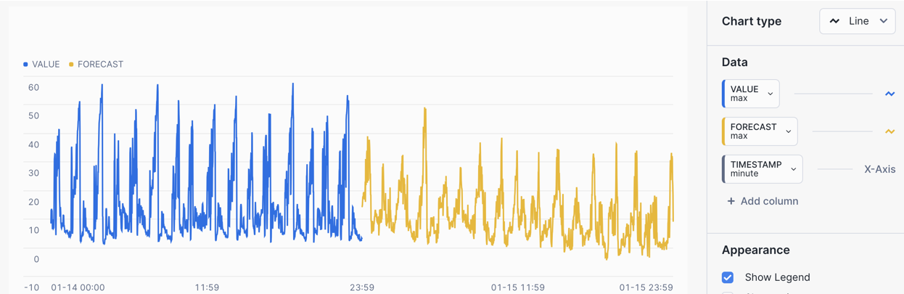
Ask Copilot
Snowflake Copilot is an LLM-powered assistant that simplifies data analysis while maintaining robust data governance, and seamlessly integrates into your existing Snowflake workflow.
Snowflake Copilot is powered by a model fine-tuned by Snowflake that runs securely inside Snowflake Cortex, Snowflake's intelligent, fully managed AI service. Snowflake Copilot uses the names of your databases, schemas, tables, and columns and also the data types of your columns to determine what data is available to query.
Snowflake Copilot also has access to Snowflake documentation and can answer general questions about Snowflake or SQL.
For more information, please review How to use Snowflake Copilot and Tips for using Snowflake Copilot.
NOTE: At the time of publishing this lab, in late May 2024, Snowflake Copilot was in Public Preview in AWS US regions. We have included it in the lab content for reference. If you do not see "Ask Copilot", it may NOT be released in your region just yet. Please review the Snowflake Preview Features page for more information.
- At the top left of the screen, select
+ > SQL Worksheet. This will open a new worksheet in Snowsight.

- At the bottom right of the worksheet, click the Ask Copilot button.

- A Snowflake Copilot tab will appear to the right of the window, at the bottom click Select Database.

- Select the database and schema
HOL_TIMESERIES > ANALYTICS.

- Try asking Snowflake Copilot the following prompts, by entering them into the text prompt box. Snowflake Copilot will return a generated SQL query along with annotations of how it structures the SQL query.
- Show me namespace, tag name, time, and latest value for tag /IOT/SENSOR/TAG301
- Show me the average values by namespace and tag name
- Show me the max value, and time for tag name /IOT/SENSOR/TAG101 on January 10 2024 by tag name
- Show me 1hr averages for tag /IOT/SENSOR/TAG301 on January 3 2024 by tag

- Click the
Runbutton below the generated SQL query. If it's correct, please give the generated prompt output a thumbs up!
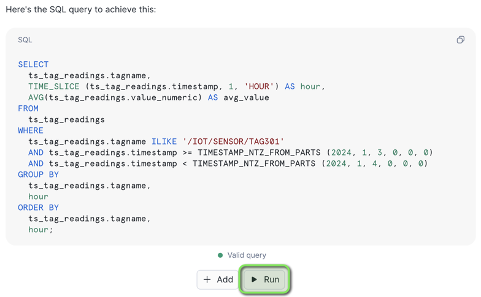
Copilot will execute the SQL in the worksheet.

Now that you have a great understanding of running Time Series Analysis, we will now look at deploying time series User Defined Table Functions (UDTF) that can query time series data in a re-usable manner. Table functions will accept a set of input parameters and perform operations on a data set, and return results in a table format.

INFO: Time Series Query Profiles
The following query profiles will be covered in this section.
Query Type | Functions | Description |
Upsampling / Interpolation | Custom Interpolation Table Function | Time binning aggregations with interpolated values over time intervals. |
Downsampling - LTTB | Custom Snowpark Downsampling Table Function | Downsampling to a set number of data points whilst retaining the shape and variability of the time series data. |
Table Functions Deploy
In this section we'll deploy two types of Time Series User-Defined Table Functions (UDTF) that will be used to resample time series data.
Function 1 - SQL - Interpolation / Upsampling Time Series Data
Upsampling is used to increase the frequency of time samples, such as from hours to minutes, by placing time series data into fixed time intervals using aggregate operations on the values within each time interval. Due to the frequency of samples being increased it has the effect of creating new values if the interval is more frequent than the data itself.
If the interval does not contain a value, it will be interpolated from the surrounding aggregated data.
Function 2 - Python - Downsampling Time Series Data
Downsampling is used to decrease the frequency of time samples, such as from seconds to minutes. For the downsampling table function, we will deploy the Largest Triangle Three Buckets (LTTB) downsampling algorithm, which is part of the Snowpark Python - plotly-resampler package.
The LTTB algorithm reduces the number of visual data points in a time series data set, whilst retaining the shape and variability of the time series data. It's useful for reducing large time series data sets for charting purposes where the consumer system may have reduced memory resources.
Step 1 - Deploy Time Series Functions and Procedures
- In VS Code open the worksheet
worksheets/hol_timeseries_5_functions.sql - Click the
Execute All Statementsbutton at the top right of the worksheet to deploy all functions and procedures.
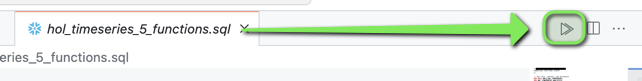
INFO: Time Series Functions and Procedures
The following functions and procedures have been deployed.
/*##############################
-- Create Interpolate Table Function
##############################*/
CREATE OR REPLACE FUNCTION HOL_TIMESERIES.ANALYTICS.FUNCTION_TS_INTERPOLATE (
V_TAGLIST VARCHAR,
V_START_TIMESTAMP TIMESTAMP_NTZ,
V_END_TIMESTAMP TIMESTAMP_NTZ,
V_INTERVAL NUMBER,
V_BUCKETS NUMBER
)
RETURNS TABLE (
TIMESTAMP TIMESTAMP_NTZ,
TAGNAME VARCHAR,
LINEAR_VALUE FLOAT,
LOCF_VALUE FLOAT,
LAST_TIMESTAMP TIMESTAMP_NTZ
)
LANGUAGE SQL
AS
$$
WITH
TSTAMPS AS (
SELECT
DATEADD('SEC', V_INTERVAL * ROW_NUMBER() OVER (ORDER BY SEQ8()) - V_INTERVAL, V_START_TIMESTAMP) AS TIMESTAMP
FROM TABLE(GENERATOR(ROWCOUNT => V_BUCKETS))
),
TAGLIST AS (
SELECT
TRIM(TAGLIST.VALUE) AS TAGNAME
FROM
TABLE(SPLIT_TO_TABLE(V_TAGLIST, ',')) TAGLIST
),
TIMES AS (
SELECT
TSTAMPS.TIMESTAMP,
TAGLIST.TAGNAME
FROM
TSTAMPS
CROSS JOIN TAGLIST
),
LAST_VALUE AS (
SELECT
TIMES.TIMESTAMP,
RAW_DATA.TIMESTAMP RAW_TS,
RAW_DATA.TAGNAME,
RAW_DATA.VALUE_NUMERIC
FROM
TIMES ASOF JOIN HOL_TIMESERIES.ANALYTICS.TS_TAG_READINGS RAW_DATA
MATCH_CONDITION(TIMES.TIMESTAMP >= RAW_DATA.TIMESTAMP)
ON TIMES.TAGNAME = RAW_DATA.TAGNAME
WHERE
RAW_DATA.TIMESTAMP >= V_START_TIMESTAMP
AND RAW_DATA.TIMESTAMP <= V_END_TIMESTAMP
),
NEXT_VALUE AS (
SELECT
TIMES.TIMESTAMP,
RAW_DATA.TIMESTAMP RAW_TS,
RAW_DATA.TAGNAME,
RAW_DATA.VALUE_NUMERIC
FROM
TIMES ASOF JOIN HOL_TIMESERIES.ANALYTICS.TS_TAG_READINGS RAW_DATA
MATCH_CONDITION(TIMES.TIMESTAMP <= RAW_DATA.TIMESTAMP)
ON TIMES.TAGNAME = RAW_DATA.TAGNAME
WHERE
RAW_DATA.TIMESTAMP >= V_START_TIMESTAMP
AND RAW_DATA.TIMESTAMP <= V_END_TIMESTAMP
),
COMB_VALUES AS (
SELECT
TIMES.TIMESTAMP,
TIMES.TAGNAME,
LV.VALUE_NUMERIC LAST_VAL,
LV.TIMESTAMP LV_TS,
LV.RAW_TS LV_RAW_TS,
NV.VALUE_NUMERIC NEXT_VAL,
NV.TIMESTAMP NV_TS,
NV.RAW_TS NV_RAW_TS
FROM TIMES
INNER JOIN LAST_VALUE LV ON TIMES.TIMESTAMP = LV.TIMESTAMP AND TIMES.TAGNAME = LV.TAGNAME
INNER JOIN NEXT_VALUE NV ON TIMES.TIMESTAMP = NV.TIMESTAMP AND TIMES.TAGNAME = NV.TAGNAME
),
INTERP AS (
SELECT
TIMESTAMP,
TAGNAME,
TIMESTAMPDIFF(SECOND, LV_RAW_TS, NV_RAW_TS) TDIF_BASE,
TIMESTAMPDIFF(SECOND, LV_RAW_TS, TIMESTAMP) TDIF,
LV_TS,
NV_TS,
LV_RAW_TS,
LAST_VAL,
NEXT_VAL,
DECODE(TDIF, 0, LAST_VAL, LAST_VAL + (NEXT_VAL - LAST_VAL) / TDIF_BASE * TDIF) IVAL
FROM
COMB_VALUES
)
SELECT
TIMESTAMP,
TAGNAME,
IVAL LINEAR_VALUE,
LAST_VAL LOCF_VALUE,
LV_RAW_TS LAST_TIMESTAMP
FROM
INTERP
$$;
/*##############################
-- Create Interpolate Procedure
-- Interpolate helper procedure to accept start and end times, and return either LOCF or Linear Interpolated Values
##############################*/
CREATE OR REPLACE PROCEDURE HOL_TIMESERIES.ANALYTICS.PROCEDURE_TS_INTERPOLATE (
V_TAGLIST VARCHAR,
V_FROM_TIME TIMESTAMP_NTZ,
V_TO_TIME TIMESTAMP_NTZ,
V_INTERVAL NUMBER,
V_INTERP_TYPE VARCHAR
)
RETURNS TABLE (
TIMESTAMP TIMESTAMP_NTZ,
TAGNAME VARCHAR,
VALUE FLOAT
)
LANGUAGE SQL
AS
$$
DECLARE
TIME_BUCKETS NUMBER;
RES RESULTSET;
BEGIN
TIME_BUCKETS := CEIL((TIMESTAMPDIFF('SEC', :V_FROM_TIME, :V_TO_TIME) + 1) / :V_INTERVAL);
IF (:V_INTERP_TYPE = 'LINEAR') THEN
-- LINEAR
RES := (SELECT TIMESTAMP, TAGNAME, LINEAR_VALUE AS VALUE FROM TABLE(HOL_TIMESERIES.ANALYTICS.FUNCTION_TS_INTERPOLATE(:V_TAGLIST, :V_FROM_TIME, :V_TO_TIME, :V_INTERVAL, :TIME_BUCKETS)) ORDER BY TAGNAME, TIMESTAMP);
ELSE
-- LOCF
RES := (SELECT TIMESTAMP, TAGNAME, LOCF_VALUE AS VALUE FROM TABLE(HOL_TIMESERIES.ANALYTICS.FUNCTION_TS_INTERPOLATE(:V_TAGLIST, :V_FROM_TIME, :V_TO_TIME, :V_INTERVAL, :TIME_BUCKETS)) ORDER BY TAGNAME, TIMESTAMP);
END IF;
RETURN TABLE(RES);
END;
$$;
/*##############################
-- LTTB Downsampling Table Function
##############################*/
CREATE OR REPLACE FUNCTION HOL_TIMESERIES.ANALYTICS.FUNCTION_TS_LTTB (
TIMESTAMP NUMBER,
VALUE FLOAT,
SIZE NUMBER
)
RETURNS TABLE (
TIMESTAMP NUMBER,
VALUE FLOAT
)
LANGUAGE PYTHON
RUNTIME_VERSION = 3.11
PACKAGES = ('pandas', 'plotly-resampler')
HANDLER = 'lttb_run'
AS $$
from _snowflake import vectorized
import pandas as pd
from plotly_resampler.aggregation.algorithms.lttb_py import LTTB_core_py
class lttb_run:
@vectorized(input=pd.DataFrame)
def end_partition(self, df):
if df.SIZE.iat[0] >= len(df.index):
return df[['TIMESTAMP','VALUE']]
else:
idx = LTTB_core_py.downsample(
df.TIMESTAMP.to_numpy(),
df.VALUE.to_numpy(),
n_out=df.SIZE.iat[0]
)
return df[['TIMESTAMP','VALUE']].iloc[idx]
$$;
Step 2 - Copy Worksheet Content To Snowsight Worksheet
With the functions deployed, we can look at using them to query time series data.
This section will be executed within a Snowflake Snowsight Worksheet
- Login to Snowflake, and from the menu expand
Projects > Worksheets
- At the top right of the Worksheets screen, select
+ > SQL Worksheet. This will open a new worksheet in Snowsight.
- In VS Code open the worksheet
worksheets/hol_timeseries_6_function_queries.sql - Copy the contents of the worksheet to clipboard, and paste it into the newly created Worksheet in Snowsight
Step 3 - Query Time Series Data Using Deployed Functions and Procedures
Set Session Context
Run the following three statements to ensure the worksheet session is in the right context.
-- Set role, context, and warehouse
USE ROLE ROLE_HOL_TIMESERIES;
USE SCHEMA HOL_TIMESERIES.ANALYTICS;
USE WAREHOUSE HOL_ANALYTICS_WH;
Upsampling / Interpolation Query
Upsampling is used to increase the frequency of time samples.
The first set of queries use the INTERPOLATE table functions and procedures to produce values for upsampling both last observed values carried forward (LOCF) and LINEAR interpolated smoothing values between data points.
Call the interpolate table function to return both the linear interpolated values and last observed value carried forward (LOCF).
-- Set role, context, and warehouse
USE ROLE ROLE_HOL_TIMESERIES;
USE SCHEMA HOL_TIMESERIES.ANALYTICS;
USE WAREHOUSE HOL_ANALYTICS_WH;
/* INTERPOLATE TABLE FUNCTION
Call the interpolate table function to return both the linear interpolated values and last observed value carried forward (LOCF).
*/
SELECT * FROM TABLE(HOL_TIMESERIES.ANALYTICS.FUNCTION_TS_INTERPOLATE('/IOT/SENSOR/TAG401', '2024-01-01 12:10:00'::TIMESTAMP_NTZ, '2024-01-01 13:10:00'::TIMESTAMP_NTZ, 10, 362)) ORDER BY TAGNAME, TIMESTAMP;
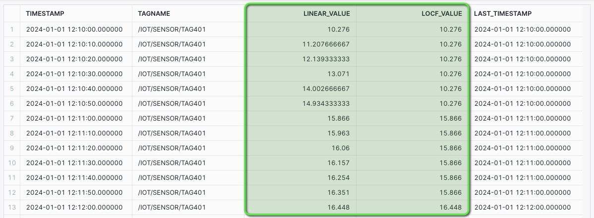
CHART: Interpolation - Linear and LOCF
- Select the
Chartsub tab below the worksheet. - Under Data select
TIMESTAMPand set Bucketing toSecond - Under Data select
LINEAR_VALUEand set the Aggregation toMax. - Select
+ Add columnand selectLOCF_VALUEand set Aggregation toMax.
The chart will display both LINEAR and LOCF for interpolated values between data points.

Interpolation - Last Observed Value Carried Forward (LOCF) Query
The Interpolation Procedure will accept a start time and end time, along with a bucket interval size in seconds.
It will then calculate the number of buckets within the time boundary, and call the Interpolate table function.
Call Interpolate Procedure with Taglist, Start Time, End Time, and Intervals, with LOCF Interpolate type.
/* INTERPOLATE PROCEDURE - LOCF
The Interpolation Procedure will accept a start time and end time, along with a bucket interval size in seconds.
It will then calculate the number of buckets within the time boundary, and call the Interpolate table function.
Call Interpolate Procedure with Taglist, Start Time, End Time, and Intervals, with `LOCF` Interpolate type.
*/
CALL HOL_TIMESERIES.ANALYTICS.PROCEDURE_TS_INTERPOLATE(
-- V_TAGLIST
'/IOT/SENSOR/TAG401',
-- V_FROM_TIME
'2024-01-01 12:10:00',
-- V_TO_TIME
'2024-01-01 13:10:00',
-- V_INTERVAL
10,
-- V_INTERP_TYPE
'LOCF'
);
CHART: Interpolation - LOCF
- Select the
Chartsub tab below the worksheet. - Under Data select
VALUEand set the Aggregation toMax.
The chart will display a LOCF value where the prior value is interpolated between data points.

Interpolation - Linear Query
Similar to the LOCF interpolation procedure call, this will create a LINEAR Interpolation table.
Call Interpolate Procedure with Taglist, Start Time, End Time, and Intervals, with LINEAR Interpolate type.
/* INTERPOLATE PROCEDURE - LINEAR
Similar to the LOCF interpolation procedure call, this will create a Linear Interpolation table.
Call Interpolate Procedure with Taglist, Start Time, End Time, and Intervals, with `LINEAR` Interpolate type.
*/
CALL HOL_TIMESERIES.ANALYTICS.PROCEDURE_TS_INTERPOLATE(
-- V_TAGLIST
'/IOT/SENSOR/TAG401',
-- V_FROM_TIME
'2024-01-01 12:10:00',
-- V_TO_TIME
'2024-01-01 13:10:00',
-- V_INTERVAL
10,
-- V_INTERP_TYPE
'LINEAR'
);
CHART: Interpolation - Linear
- Select the
Chartsub tab below the worksheet. - Under Data select
VALUEand set the Aggregation toMax.
The chart will display a smoother LINEAR interpolated value between data points.

LTTB Query
The Largest Triangle Three Buckets (LTTB) algorithm is a time series downsampling algorithm that reduces the number of visual data points, whilst retaining the shape and variability of the time series data.
Starting with a RAW query we can see the LTTB function in action, where the function will downsample two hours of data for a one second tag, 7200 data points downsampled to 500 data points whilst keeping the shape and variability of the values.
RAW Query
/* RAW - 2 HOURS OF 1 SEC DATA
Source of downsample - 7200 data points
*/
SELECT TAGNAME, TIMESTAMP, VALUE_NUMERIC as VALUE
FROM HOL_TIMESERIES.ANALYTICS.TS_TAG_READINGS
WHERE TIMESTAMP > '2024-01-09 21:00:00'
AND TIMESTAMP <= '2024-01-09 23:00:00'
AND TAGNAME = '/IOT/SENSOR/TAG301'
ORDER BY TAGNAME, TIMESTAMP;
CHART: RAW Query
- Select the
Chartsub tab below the worksheet. - Under Data select
VALUEand set the Aggregation toMax. - Under Data select
TIMESTAMPand set the Bucketing toSecond.
7200 Data Points

LTTB Query
We can now pass the same data into the LTTB table function and request 500 data points to be returned.
/* LTTB - DOWNSAMPLE TO 500 DATA POINTS
We can now pass the same data into the LTTB table function and request 500 data points to be returned.
The DATA subquery sets up the data set, and this is cross joined with the LTTB table function,
with an input of TIMESTAMP, VALUE, and the downsample size of 500.
*/
SELECT DATA.TAGNAME, LTTB.TIMESTAMP::VARCHAR::TIMESTAMP_NTZ AS TIMESTAMP, LTTB.VALUE
FROM (
SELECT TAGNAME, TIMESTAMP, VALUE_NUMERIC as VALUE
FROM HOL_TIMESERIES.ANALYTICS.TS_TAG_READINGS
WHERE TIMESTAMP > '2024-01-09 21:00:00'
AND TIMESTAMP <= '2024-01-09 23:00:00'
AND TAGNAME = '/IOT/SENSOR/TAG301'
) AS DATA
CROSS JOIN TABLE(HOL_TIMESERIES.ANALYTICS.FUNCTION_TS_LTTB(DATE_PART(EPOCH_NANOSECOND, DATA.TIMESTAMP), DATA.VALUE, 500) OVER (PARTITION BY DATA.TAGNAME ORDER BY DATA.TIMESTAMP)) AS LTTB
ORDER BY TAGNAME, TIMESTAMP;
CHART: LTTB Query
- Select the
Chartsub tab below the worksheet. - Under Data select
VALUEand set the Aggregation toMax. - Under Data select
TIMESTAMPand set the Bucketing toSecond.
500 Data Points - The shape and variability of the values are retained, when compared to the 7200 data point RAW chart.

After completing the analysis of the time series data that was streamed into Snowflake, we are now ready to deliver a Time Series Analytics application for end users to easily consume time series data. For this purpose we are going to use a Streamlit in Snowflake application, deployed using Snowflake CLI.

Step 1 - Setup Snowflake Stage for Streamlit Application
- In VS Code open the worksheet
worksheets/hol_timeseries_7_streamlit.sql - Run the Worksheet to create a stage for the Streamlit application
/*##### STREAMLIT SCRIPT #####*/
-- Set role, context, and warehouse
USE ROLE ROLE_HOL_TIMESERIES;
USE SCHEMA HOL_TIMESERIES.ANALYTICS;
USE WAREHOUSE HOL_ANALYTICS_WH;
-- Create a stage for Streamlit
CREATE OR REPLACE STAGE HOL_TIMESERIES.ANALYTICS.STAGE_TS_STREAMLIT
DIRECTORY = (ENABLE = TRUE, REFRESH_ON_CREATE = TRUE)
ENCRYPTION = (TYPE = 'SNOWFLAKE_SSE');
/*###### EXTERNAL ACTIVITY #####
Use Snowflake CLI to upload Streamlit app:
$ conda activate hol-timeseries
$ snow --config-file=".snowflake/config.toml" streamlit deploy --replace --project "streamlit" --connection="hol-timeseries-streamlit"
##############################*/
/*##### STREAMLIT SCRIPT #####*/
Step 2 - Deploy Streamlit Application to Snowflake
In this step, we will now deploy the Streamlit application on the Snowflake account using Snowflake CLI.
In the GitHub Codespace VS Code:
- Open
Menu > Terminal > New Terminal- a new terminal window will now open
- Activate
hol-timeseriespython virtual environment by runningconda activate hol-timeseries
conda activate hol-timeseries
- Copy and run the following Snowflake CLI command into the Terminal to deploy the Streamlit application
snow --config-file=".snowflake/config.toml" streamlit deploy --replace --project "streamlit" --connection="hol-timeseries-streamlit"
Step 3 - Launch the Streamlit Application
Once the Streamlit application is successfully deployed, Snowflake CLI will display the message "Streamlit successfully deployed and available" and will provide the URL for the Streamlit application.
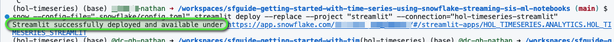
- Press Command/Ctrl and click the URL link to launch the Streamlit application in a new tab. Alternatively, copy and paste the URL into a new tab.
- Select
Openonce prompted.

Step 4 - Understanding the Streamlit Application
The Streamlit in Snowflake application contains several pages, accessible via the left menu, that cover various Time Series queries.
Streamlit Pages
- Raw Time Series Data
- Statistical Aggregate Time Series Data
- Time Binning / Downsampling Time Series Data
Filtering Menu
Each page has a filtering menu to:
- Select one or more tags
- Change reporting time selection
- Set the sample size of chart visualizations
- Select various aggregations

Streamlit Features
At the bottom of each page there are options to:
- Select how much data is displayed in the table along with the order
- Download as CSV - To download the data in CSV file format
- Supporting Detail - Shows the queries being run
- Refresh Mode - Contains a toggle to enable auto refresh and see new data automatically

Step 5 - Set Streamlit Filters and Query Data
Initial IoT Data Loaded: 1-Jan-2024 to 14-Jan-2024
The initial data set contains two weeks of data loaded for 1-Jan-2024 to 14-Jan-2024. Let's query this using the Streamlit application.
Open the Streamlit Application:
- Select the TS Raw page
- From Select Tag Name choose the
/IOT/SENSOR/TAG101 - For Start Date select
1-Jan-2024 - For Start Time select
00:00 - For End Date select
1-Jan-2024 - For End Time select
04:00

Data for 1-Jan-2024 should now display

- Select the TS Aggregates page
- The aggregates page will show high level statistical detail for the selected tag and time period.
- Select the TS Binning page
- The binning page shows a 1 minute downsampled average for the selected tag and time period.
- Try changing the Select Aggregation Method to
MIN- This will now show the 1 minute minimums for the tag and time period.
- Try changing the Label Position to
START- The Tag Data table will now show the Start timestamp for each minute interval.
Step 6 - Start a Continuous Simulated Stream
We can now start a continuous stream of data into Snowflake, similar to the initial streaming load, to simulate IoT device data streaming in near real-time to Snowflake.
In the GitHub Codespace VS Code:
- Open
Menu > Terminal > New Terminal- a new terminal window will now open
- Change directory into to the iotstream folder:
cd iotstream
cd iotstream
- Run the
Run_Slooow.shscript to load the IoT data.
./Run_Slooow.sh
- Back in the Streamlit application try enabling
Auto RefreshbyExpanding Refresh Mode > Toggle Auto Refresh- The charts and data should now start to automatically update with new data streaming into Snowflake every minute.

- Select the TS Raw page to see the raw data
- Try adding
/IOT/SENSOR/TAG401and/IOT/SENSOR/TAG601to the Select Tag Names filter- The charts and data should now contain two additional tags with the data updating every minute.

- In VS Code open the worksheet
worksheets/hol_timeseries_8_cleanup.sql. - Click the
Execute All Statementsbutton at the top right of the worksheet to run the cleanup script.

/*##### CLEANUP SCRIPT #####*/
-- Set role and context
USE ROLE ACCOUNTADMIN;
USE DATABASE SNOWFLAKE;
-- Cleanup Snowflake objects
DROP DATABASE HOL_TIMESERIES;
DROP WAREHOUSE HOL_TRANSFORM_WH;
DROP WAREHOUSE HOL_ANALYTICS_WH;
DROP ROLE ROLE_HOL_TIMESERIES;
DROP USER USER_HOL_TIMESERIES;
/*##### CLEANUP SCRIPT #####*/
- Stop or delete the Github Codespace, using the Codespace actions menu.

What You Learned
- How to stream time series data into Snowflake using Snowpipe Streaming
- How to use Dynamic Tables for continuous data pipeline transformations
- How to analyze time series data using native Snowflake time series functions
- How to create custom time series functions and procedure in Snowflake
- How to deploy a Streamlit application using Snowflake CLI to enable end users to run time series analytics
Additional Resources
Snowflake Documentation
- Analyzing time-series data
- Time-Series Forecasting (Snowflake Cortex ML Functions)
- Snowpark Developer Guide for Python
- Streamlit in Snowflake
- Snowpipe Streaming
- Overview of the Kafka connector
- Using Snowflake Connector for Kafka with Snowpipe Streaming
Snowflake Blog
- Accelerate Your Time Series Analytics with Snowflake's ASOF JOIN, Now Generally Available
- Snowflake Blog